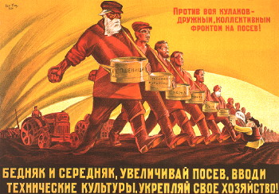

1920-1930
Soviet Union in 1920-1930

New Economic Policy (1921-1928)
Initiated by Lenin in New Economic Policy which gave increased economic freedom to peasants, permitted ownership of private property in manafacturing, trade. NEP was a success. Economic However, economic relaxation was accompanied by political repression against religious figures
Stalin's Rise to Absolut Power (1924-1929)
After Lenin's death in 1924, Stalin used his control of party apparatus as the General Secretary to crush his opponents. Trotsky, Kamenev and Zionev were labeled as leftist opposition and driven from their party posts. Later, he smashed the party's right led by Bukharin for opposing measures for agricultural and industrial policies.
Collectivization and Industralization
Stalin's program of farm collectivization began late in 1928 when he suddenly ordered the expropriation of the lands of the middle-class farmers, or KULAKS. The party managed to seize total control of the harvest, deport about 5 million kulaks as "bourgeois residue" from the countryside, and secure enough capital (through the export of the forcibly seized grain) to finance a massive industrialization drive.
By 1930, Stalin is in full control. Propaganda focuses on political discipline and the Five Year Plans, ambitious programs for the collectivization of agriculture and the establishing of heavy industry. The posters give a powerful, dynamic impression, using photomontage, often diagonal compositions, strong contrasts in colours and shapes.
Sites in Russian